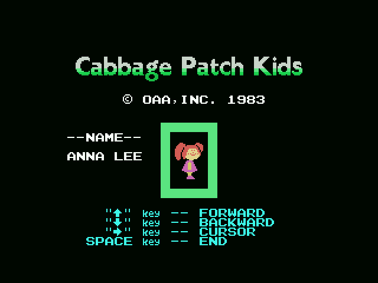

Three blocks are, byte for byte, data from Athletic Land, the house's earlier cartridge:
| here | bytes | there | offset |
|---|---|---|---|
| 0x6718 | 16 | 0x6DD4 | +1,724 |
| 0x6AA6 | 251 | 0x6E90 | +1,002 |
| 0x6BF6 | 172 | 0x6FF9 | +1,027 |
They are the background lists and the tiles of hills and plateaus. And they are not used: no instruction in the cartridge points at them with an immediate, and their addresses do not appear inside any table either. The same goes for the dead routine at 0x44D2, five bytes that would set the border colour and which nothing calls — the very same routine, in the very same state, as the one that cartridge carries.
That is not a guess about the family. This game is that engine recompiled: aligning the two instruction by instruction, with the 16-bit operands zeroed, 68.5% of the instructions line up one to one, in twenty-nine runs of twenty instructions or more. What is left over is 439 bytes of scenery nobody draws.
Because the engine is the same, the annotations were ported across with tools/porta_desde_athletic.py, which aligns the two listings and moves each label and comment to the address it belongs to here. That puts the comment in the right place, but it does not change what it says, and the reassembly cannot notice: a comment is not a byte.
tools/repasa_el_porte.py is the check for it, and it is not heuristic. It caught, among others, five comments that published the sibling's tile counts — ld hl,nn normalises to the same instruction in both cartridges, and the number they talk about is in the ld bc,nn underneath. That is why it compares the instruction the comment sits on and the one after it.
Two screens stand between the menu and the game. On the first you pick the kid; on the second you type its name, ten letters, which comes out of the factory saying ANNA LEE — and that is written into the player's start-up values at 0x44A3, next to the three lives and the clock, so the name is as much part of starting a game as they are.

With two players the screen comes round twice: 0x426B sees the fire key, and if bit 5 of 0xE002 says there are two, it changes turn and sets the menu step back to 1 so the other player names theirs.
The dispatcher never returns to its call, so whatever has to run after a state is pushed on the stack beforehand. Miss that and two whole routines —the label blink and the menu's key reading— are never reached by the tracer and come out of the listing as if they were a data blob.
The evidence is a single instruction: ld hl,04735h / ld hl,040c1h at 0x4131 and 0x4136, and the push hl at 0x4140.
The mirrored copy counts with B. The call at 0x6CD1 loads ld bc,0x0018, which puts 0x18 in C and leaves B at zero, and a djnz from zero goes round 256 times. So that copy carries 256 bytes into the pattern table, of which the middle is then overwritten by the two copies that follow: what is left showing of it are the two ends.
Many Konami cartridges hide their catalogue number and the title in katakana behind the filler at the end of the ROM. The format —title backwards, its length, the last two digits of the RC in BCD and an 0xAA— was found by Manuel Pazos (@ManuelPazosMSX), and it is thanks to him that anyone knows to look there.
This cartridge does not have it: tools/marca_konami.py finds no 0xAA closing anything, and what is at the end is sound-player data. RC-716 comes from the catalogue, not from the binary.
The title screen reads © OAA,INC. 1983 — Original Appalachian Artworks, who own the Cabbage Patch Kids — while the play screen reads ©KONAMI 1984. Two different years and two different owners, on two different screens, both written in the same font.